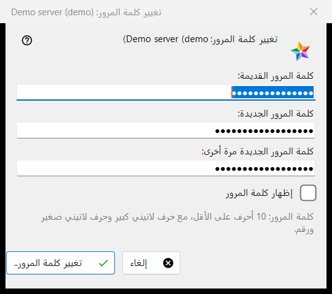
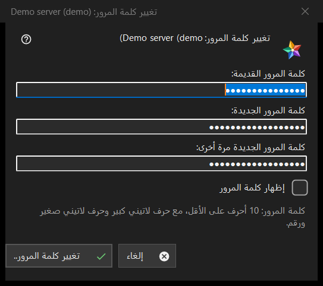

تغيير كلمة المرور
الغرض من هذه النافذة
يغيّر كلمة مرور حسابك على خادم تبادل. يُفتح من الزر تغيير كلمة المرور.. لإدخال الخادم في القسم أجهزتي من قائمة الموارد؛ ويظهر الزر ما دام ذلك الخادم متصلاً. يسمّي العنوان الحساب.


بهذا الترتيب
- اكتب كلمة المرور القديمة.
- اكتب كلمة المرور الجديدة مرتين.
- اضغط الزر تغيير كلمة المرور.. أما الزر إلغاء فيغلق النافذة ولا يرسل شيئًا.
عناصر النافذة
الحقول الثلاثة
الحقول هي كلمة المرور القديمة وكلمة المرور الجديدة وكلمة المرور الجديدة مرة أخرى؛ والخيار إظهار كلمة المرور يكشفها. تُمسح المربعات عند إغلاق النافذة. النافذة تجمع كلمات المرور فقط: العارض هو من يرسلها إلى الخادم عبر اتصال ذلك الإدخال.
قاعدة كلمة المرور
تقول الملاحظة: 10 أحرف على الأقل، مع حرف لاتيني كبير وآخر صغير ورقم. تتحقق النافذة من ذلك قبل إرسال أي شيء وتسمّي الجزء الذي لا يستوفيه، مثل (كلمة المرور أقصر من 10 أحرف.) أو (لا تحتوي كلمة المرور على رقم.)؛ كما تقول (أدخل كلمة المرور القديمة.) و(كلمتا المرور غير متطابقتين.). ويطبّق الخادم القاعدة نفسها وله الكلمة الأخيرة.
بعد التغيير
عند النجاح تقول الحالة: تم تغيير كلمة المرور. يستمر هذا الكمبيوتر في العمل، وعلى بقية أجهزة الحساب تسجيل الدخول مرة أخرى. وحالات الرفض: لم تناسب كلمة المرور القديمة؛ محاولات كثيرة جدًا (انتظر دقيقة وأعد المحاولة)؛ رفض الخادم التغيير؛ لا يوجد اتصال بالخادم (اتصل وأعد المحاولة).